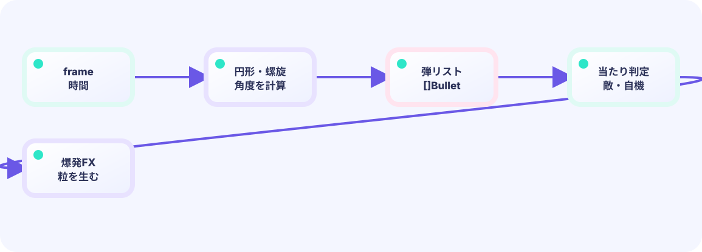

円形弾幕
コンピュータの角度は度数法（360度）ではなくラジアン（1周 = 2π ≒ 6.28）が基本です。全周を弾の数で割ると1発ごとの間隔になります。cos/sin が X/Y の向きです。
a = i * math.Pi * 2 / count★★★★★ / PLAYABLE
画面を埋め尽くす弾幕も、1発1発は「位置と速度を持つ小さなデータ」です。円形に並べる計算、自機を狙う計算、そして画面外へ消えた弾を効率よく削除するパターンを学びます。
見た目はオリジナル主人公の 海老・天次郎。当たり判定は図形のままです。動きの計算は LEVEL 01と同じく、位置や得点などゲームの中身はUpdateで進めます。Drawは中身を変えず、画面への見せ方だけを担当します。
PLAYABLE / WEBASSEMBLY
WASD・矢印キー・ドラッグで自機を動かします。弾は自動発射です。ボスのHPゲージを0にすれば勝利。ライフが0になるとゲームオーバーです。
はじめて読む人へ
cos/sinは角度から円周上の横・縦位置を得る道具。ラジアンは角度単位で2πが一周、tick%周期は一定tickごとに同じ模様を繰り返します。
このページの1本
説明と次のコードを対応させてから、ゲームで変化を確かめよう。
angle := 2*math.Pi*float64(i)/countまず1発、次に大量
最初は弾1個の位置と速度をUpdateし、Drawで円を1つ描きます。動くことを確認してから、forで同じ処理を何十個にも増やし、最後に画面外を削除します。
for i := range bullets {
bullets[i].X += bullets[i].VX
drawCircle(bullets[i].X, bullets[i].Y)
}

DEEP DIVE / BULLET PATTERNS AND OPTIMIZATION
答えは三角関数（さんかくかんすう）です。難しく聞こえますが、「円の上の点の座標は cos(角度) と sin(角度) で求まる」ということだけ覚えれば十分です。全周360度を弾の数で等分し、それぞれの角度に cos・sin をかけて速度にすれば、完全な円形弾幕が生まれます。さらに回転スピンを加えると、tickごとに角度がずれて渦巻き弾幕になります。
コンピュータの角度は度数法（360度）ではなくラジアン（1周 = 2π ≒ 6.28）が基本です。全周を弾の数で割ると1発ごとの間隔になります。cos/sin が X/Y の向きです。
a = i * math.Pi * 2 / countAtan2(dy, dx) は「自分から見て、相手がどの向きにあるか（角度）」を求める関数です。横の差・縦の差の2つの数字から、その1つの角度を計算します（中学の三角より一歩先）。返ってきた角度を中心に扇形へ広げます。
base = math.Atan2(py-128, px-240)画面外に出た弾はtickごとに削除します。後ろから（大きい添え字から）ループすることで、削除しても添え字がずれません。
for i := len-1; i >= 0; i--TRY IT / LAB
全周を弾の数で割った角度に cos / sin をかけて円形弾幕を作ります。
本物のゲームの公式を、手でゆっくり回す模型です。
TRY IT · GO
for i := 0; i < n; i++ { angle := tau * i / n } vx, vy := cos(a)*speed, sin(a)*speed n = clamp(n, 4, 24)
—
THE CIRCLE SHOT
a = spin + i * (2π / count)速度へ変換vx, vy = cos(a) * speed, sin(a) * speedspin はtickごとに少しずつ増えるので、次の波では全体が少し回転します。これだけで螺旋・渦巻きパターンが生まれます。
IN THE REAL GAME
フレーム番号を周期で割った余りを見て、どの弾パターンを発射するか決めます。周期を変えるだけで難易度が変わります。
float64(...) は整数を小数に直す変換です。Goは int と float を混ぜて計算できないので、角度や速さの式では何度も出てきます。意味は「小数として計算したい」だけです。
// 38tickごとに円形弾幕（スピン付き）
if g.frame%38 == 0 {
count := 18
spin := float64(g.frame) * .017 // 回転量
for i := 0; i < count; i++ {
a := spin + float64(i)*math.Pi*2/float64(count)
speed := 2.0 + float64((g.frame/38)%3)*.35
g.bullets = append(g.bullets,
bullet{240, 128, math.Cos(a)*speed, math.Sin(a)*speed, 6, true})
}
}
// 91tickごとに自機狙い扇形弾
if g.frame%91 == 0 {
base := math.Atan2(g.py-128, g.px-240) // 自機への角度
for i := -3; i <= 3; i++ {
a := base + float64(i)*.11
g.bullets = append(g.bullets,
bullet{240, 128, math.Cos(a)*3.0, math.Sin(a)*3.0, 7, true})
}
}TODAY — まずここを見る
下のコードがこのゲームの本体です（主人公の絵は共有パッケージ internal/hero から読みます）。コピーして手元で開けます。その前に、上の「まずここを見る」3つだけ追ってください。
package main
import (
"fmt"
"image/color"
"math"
"github.com/hajimehoshi/ebiten/v2"
"github.com/hajimehoshi/ebiten/v2/ebitenutil"
"github.com/hajimehoshi/ebiten/v2/inpututil"
"github.com/hajimehoshi/ebiten/v2/vector"
"github.com/kumagi/EbiShowcase/internal/hero"
)
const (
screenWidth = 480
screenHeight = 720
bossX = 240.0
bossY = 128.0
bossMaxHP = 320
)
type bullet struct {
x, y float64
vx, vy float64
r float64
enemy bool // true = 敵弾
}
type game struct {
playerX float64
playerY float64
vx, vy float64
bullets []bullet
frame int
bossHP int
life int
invincible int
cleared bool
gameOver bool
}
func newGame() *game {
return &game{
playerX: 240,
playerY: 620,
bossHP: bossMaxHP,
life: 5,
}
}
func clamp(v, lo, hi float64) float64 {
return math.Max(lo, math.Min(hi, v))
}
func restartPressed() bool {
if inpututil.IsKeyJustPressed(ebiten.KeySpace) {
return true
}
if inpututil.IsMouseButtonJustPressed(ebiten.MouseButtonLeft) {
return true
}
if len(inpututil.AppendJustPressedTouchIDs(nil)) > 0 {
return true
}
return false
}
func overlay(screen *ebiten.Image, msg string) {
vector.DrawFilledRect(screen, 55, 280, 370, 150, color.RGBA{6, 12, 35, 240}, false)
ebitenutil.DebugPrintAt(screen, msg, 145, 330)
}
func (g *game) movePlayer() {
ax, ay := 0.0, 0.0
if ebiten.IsKeyPressed(ebiten.KeyLeft) || ebiten.IsKeyPressed(ebiten.KeyA) {
ax--
}
if ebiten.IsKeyPressed(ebiten.KeyRight) || ebiten.IsKeyPressed(ebiten.KeyD) {
ax++
}
if ebiten.IsKeyPressed(ebiten.KeyUp) || ebiten.IsKeyPressed(ebiten.KeyW) {
ay--
}
if ebiten.IsKeyPressed(ebiten.KeyDown) || ebiten.IsKeyPressed(ebiten.KeyS) {
ay++
}
if ids := ebiten.AppendTouchIDs(nil); len(ids) > 0 {
x, y := ebiten.TouchPosition(ids[0])
ax = float64(x) - g.playerX
ay = float64(y) - g.playerY
}
if ebiten.IsMouseButtonPressed(ebiten.MouseButtonLeft) {
x, y := ebiten.CursorPosition()
ax = float64(x) - g.playerX
ay = float64(y) - g.playerY
}
if ax != 0 || ay != 0 {
length := math.Hypot(ax, ay)
g.vx += ax / length * 0.8
g.vy += ay / length * 0.8
}
g.vx *= 0.8
g.vy *= 0.8
speed := math.Hypot(g.vx, g.vy)
if speed > 5.2 {
g.vx *= 5.2 / speed
g.vy *= 5.2 / speed
}
g.playerX = clamp(g.playerX+g.vx, 18, 462)
g.playerY = clamp(g.playerY+g.vy, 90, 690)
}
// 円形弾幕
func (g *game) spawnRing() {
count := 18
spin := float64(g.frame) * 0.017
speed := 2.0 + float64((g.frame/38)%3)*0.35
for i := 0; i < count; i++ {
a := spin + float64(i)*math.Pi*2/float64(count)
g.bullets = append(g.bullets, bullet{
x: bossX, y: bossY,
vx: math.Cos(a) * speed,
vy: math.Sin(a) * speed,
r: 6, enemy: true,
})
}
}
// 自分めがけた扇状弾
func (g *game) spawnAimFan() {
base := math.Atan2(g.playerY-bossY, g.playerX-bossX)
for i := -3; i <= 3; i++ {
a := base + float64(i)*0.11
g.bullets = append(g.bullets, bullet{
x: bossX, y: bossY,
vx: math.Cos(a) * 3.0,
vy: math.Sin(a) * 3.0,
r: 7, enemy: true,
})
}
}
// --- ここから Update ---
func (g *game) Update() error {
if g.cleared || g.gameOver {
if restartPressed() {
*g = *newGame()
}
return nil
}
g.frame++
if g.invincible > 0 {
g.invincible--
}
g.movePlayer()
// 自動で自分の弾を撃つ
if g.frame%7 == 0 {
g.bullets = append(g.bullets,
bullet{g.playerX - 7, g.playerY - 15, -0.25, -10, 4, false},
bullet{g.playerX + 7, g.playerY - 15, 0.25, -10, 4, false},
)
}
// ボスの弾幕パターン
if g.frame%38 == 0 {
g.spawnRing()
}
if g.frame%91 == 0 {
g.spawnAimFan()
}
// 弾を動かして当たりを見る
for i := len(g.bullets) - 1; i >= 0; i-- {
b := &g.bullets[i]
b.x += b.vx
b.y += b.vy
remove := b.x < -30 || b.x > 510 || b.y < -30 || b.y > 750
// 自分の弾がボスに当たった
if !b.enemy && math.Hypot(b.x-bossX, b.y-bossY) < 48 {
g.bossHP--
remove = true
if g.bossHP <= 0 {
g.cleared = true
}
}
// 敵弾が自分に当たった
if b.enemy && g.invincible == 0 && math.Hypot(b.x-g.playerX, b.y-g.playerY) < b.r+4 {
g.life--
g.invincible = 90
remove = true
if g.life <= 0 {
g.gameOver = true
}
}
if remove {
g.bullets = append(g.bullets[:i], g.bullets[i+1:]...)
}
}
return nil
}
// --- ここから Draw ---
func (g *game) Draw(screen *ebiten.Image) {
screen.Fill(color.RGBA{5, 8, 24, 255})
for i := 0; i < 36; i++ {
x := float32((i*83 + g.frame/3) % screenWidth)
y := float32((i*137 + g.frame) % screenHeight)
vector.DrawFilledCircle(screen, x, y, 1, color.RGBA{150, 170, 230, 170}, false)
}
vector.DrawFilledCircle(screen, bossX, bossY, 42, color.RGBA{143, 55, 208, 255}, false)
vector.StrokeCircle(screen, bossX, bossY, 52, 4, color.RGBA{246, 80, 133, 220}, false)
vector.DrawFilledCircle(screen, 226, 122, 5, color.RGBA{255, 224, 90, 255}, false)
vector.DrawFilledCircle(screen, 254, 122, 5, color.RGBA{255, 224, 90, 255}, false)
// ボス HP バー
vector.DrawFilledRect(screen, 55, 55, 370, 14, color.RGBA{44, 48, 72, 255}, false)
hpW := float32(370 * max(g.bossHP, 0) / bossMaxHP)
vector.DrawFilledRect(screen, 55, 55, hpW, 14, color.RGBA{247, 72, 113, 255}, false)
for _, b := range g.bullets {
c := color.RGBA{255, 218, 72, 255}
if b.enemy {
c = color.RGBA{255, 76, 145, 255}
vector.StrokeCircle(screen, float32(b.x), float32(b.y), float32(b.r+2), 1, color.RGBA{139, 105, 255, 220}, false)
}
vector.DrawFilledCircle(screen, float32(b.x), float32(b.y), float32(b.r), c, false)
}
if g.invincible%10 < 5 {
hero.DrawCentered(screen, g.playerX, g.playerY, 38)
}
ebitenutil.DebugPrintAt(screen, fmt.Sprintf("BOSS %03d LIFE %d BULLETS %03d", max(g.bossHP, 0), g.life, len(g.bullets)), 70, 20)
ebitenutil.DebugPrintAt(screen, "MOVE: WASD / ARROWS / DRAG AUTO FIRE", 96, 688)
if g.cleared {
overlay(screen, "BOSS DEFEATED!\n\nTAP / SPACE TO FIGHT AGAIN")
} else if g.gameOver {
overlay(screen, "CONTINUE?\n\nTAP / SPACE TO RETRY")
}
}
func (g *game) Layout(_, _ int) (int, int) {
return screenWidth, screenHeight
}
func main() {
ebiten.SetWindowSize(screenWidth, screenHeight)
ebiten.SetWindowTitle("Bullet Hell Boss — Ebitengine")
if err := ebiten.RunGame(newGame()); err != nil {
panic(err)
}
}
WITHOUT PATTERNS
弾をランダムに飛ばすだけでは、プレイヤーが避ける楽しさを感じにくくなります。規則的なパターンがあるから、「読んで避ける」快感が生まれます。
WITH BULLET PATTERNS
円形弾は壁を作り、狙い弾は圧力をかけます。2種類を組み合わせるだけで、覚えがいのある弾幕になります。
YOUR FIRST TUNING
円形弾の count を増やすと密な弾幕になります。spin の係数を大きくすると渦が速く回ります。狙い弾の 0.11 を変えると扇の広がりが変わります。38 や 91 の周期を変えると発射タイミングが変わります。
FEEDBACK